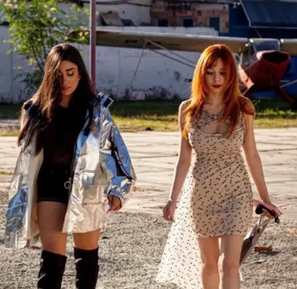
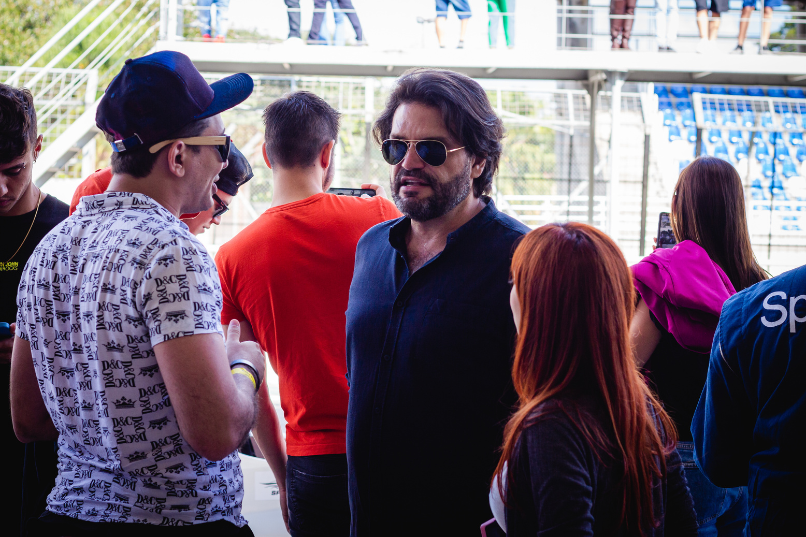

Gestão de Redes Sociais
Criação de posts, estratégias personalizadas para crescimento, planejamento mensal, legendas estratégicas e copywriting, interação com seguidores, organização do perfil, análise de métricas e ajustes mensais.
Uma seleção do trabalho de Nathalia Toquetti em social media, design, produção, influência, campanhas e audiovisual.


Sou Social Media, Designer e Produtora, com mais de 8 anos de experiência no mercado digital.
Atuo na criação de estratégias, gestão de conteúdo, design, gestão de influenciadores, estratégia digital, eventos e desenvolvimento visual e produção de marcas, influenciadores e empresas.
Meu trabalho é transformar ideias em presença digital forte, resultados consistentes e imagem profissional.
Durante 6 anos, trabalhei na Fusion Influencers LTDA, uma das maiores produtoras e agências de influenciadores do país.
Soluções que juntam criação, estratégia, execução e visão de produção em um mesmo ecossistema.
Criação de posts, estratégias personalizadas para crescimento, planejamento mensal, legendas estratégicas e copywriting, interação com seguidores, organização do perfil, análise de métricas e ajustes mensais.
Artes avulsas personalizadas, identidade visual completa, criação de logotipos, cartazes, banners, flyers, cartões, materiais digitais e layouts para campanhas, anúncios e projetos.
Organização e produção de eventos, shows e ativações, direção criativa para gravações e produções, coordenação com influenciadores e artistas.
Criação e arte para camisas, canecas, squeezes, chaveiros, brindes corporativos e outros produtos personalizados.